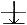

Interpretation of Toi-Gye
Toi-Gye is the pen name of the noted scholar Yi-Hwang (16th Century A.D.), an authority on neo-confucianism. The 37 movements of the pattern refer to his birthplace on the 37 degree latitude, the diagram "" represents "scholar".
Movements: 37
Diagram:
End: Right Foot Moves Back
Six types of sparring
- Prearranged sparring
- Semi free sparring
- Foot technique sparring
- Model sparring
- Prearranged free sparring
- Free sparring
Moral Culture; The five qualities of virtuousness
- Humanity
- Righteousness
- Propriety
- Wisdom
- Trust
Virtuousness an aspect of moral culture
In Taekwon-Do a heavy emphasis is placed on moral culture, for it not only promotes a healthy body and keen mind but good sportsmanship and the perfection of moral behavior. As ancient Greeks first espoused in their sound mind, sound body, creative spirit concept, the more disciplined and cultivated the mind is, the more disciplined and cultivated will be the student's use of Taekwon-Do.
No doubt the following lessons may be somewhat hard to fully understand; however, it would behove the serious student of Taekwon-Do to read, digest, and attempt to grasp these very fundamental essences of moral culture.
A. Return to the basic nature-Mencius gave the following analogy when he reasoned that a man is basically good:
Even a ruthless robber, coming upon an innocent child about to fall into a well, will try to save the child, forgetting for the moment, his intention to rob the house. This good nature becomes obscured or completely lost by greed for money and power.
B. Be virtuous-It is difficult to define what virtue is. However, these are five human qualities which have been recognized as virtues since ancient times; humanity, righteousness, courtesy, wisdom, and trust. To be virtuous one must constantly cultivate and practice these virtues.
Confucius said:
Virtue is like the north star. All the stars revolve around it in an orderly fashion:
Therefore, people who surround the virtuous person, naturally will act for the betterment of society.
HUMANITY (IN)
The ability to feel sorrow for the misfortunes of fellow men and love them all equally as parents love their children equally.
Confucius defined humanity in the following ways:
- To love people, especially one's parents.
- Not asking others to do what you would rather not do.
- To behave automatically with the nature of propriety by promoting moral sense.
- To have unbending desire to accomplish what is right regardless of how insignificant the result may initially seem when compared to the amount of effort put forth.
- To value others' honour before your own.
- To put others' freedom before your own.
To implement humanity he said one should:
- Practice utmost prudence, modesty and discretion in everyday life.
- Devote oneself to assigned work be it large or small.
- Demonstrate sincerity with whole heartedness to others at all times.
Tae Kong Mang (12th century B.C.) said;
The heaven provides four seasons while the earth has the power to produce all living things. This privilege is not reserved for any specific person but for all human beings. Therefore, humanity lies in the idea of sharing the fruits of nature with all people .
RIGHTEOUSNESS (UL)
The ability to feel ashamed of unjust acts and to do one's duty to others. Mencius said; for the ordinary person life and death are the most important in the life. However, for the virtuous person to live and die for righteousness is far more important than life and death themselves.
Righteousness is well defined in the act of a certain army general depicted in the book of "War Manual" written about 2,400 years ago.
A General was taking a break from the grueling war with his soldiers by a river bank when an aide brought him a small carafe of wine for his refreshment. He took the carafe and slowly emptied it into the flowing river in full view of the puzzled soldiers and invited them to share the wine with him by taking a sip of the water from the river. As to righteousness;
Manfucius claimed it to be the fundamental virtue to be observed by a human being.
According to Soonja, It is the essential element along with the propriety (Ye) for moral education.
Confucius said, It is the supportive measure employed to enhance humanity thought to be the highest degree of virtue
PROPRIETY (YE)
Unlike animals fighting over food, a courteous man would offer another man a piece of bread even though both were starving; out of respect and good manners.
Confucius said, Propriety must be practised for the proper development of personality, and whoever lacks sincerity in his words, cannot be considered a gentleman.
He also said:
Honesty without courtesy can be rather ruthless .
Respectfulness without courtesy can make the recipient rather uncomfortable.
Courageousness without courtesy can be rather violent.
Prudence without courtesy can be rather cowardish. Ye is a term describing proper code of conduct between various social status, for example: superior & inferior, noble and common, old and young, rich and poor, etc.
WISDOM (JI)
The ability to judge right from wrong, not especially in matters concerning the right and wrong of others but in matters concerning oneself.
A wise man (Yu Bee) once said to his sons, no matter how small it is you should not do what you realize is wrong. On the other hand you must do what is right no matter how small it may seem.
TRUST (SHIN)
The ability to keep one's words and promises, not only to one's friends but to everyone in general. Without trust a person loses all principles and dignities and becomes a liar and a cheater.
|
|